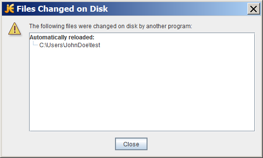

¿Se ha encontrado alguna vez editando un fichero, usando un EID u otro editor, y aparece una caja de diálogo que le informa que uno de los ficheros abiertos ha cambiado en el sistema de ficheros y necesita ser recargado? O quizás, como el EID NetBeans, la aplicación sólo actualiza silenciosamente el fichero sin notificárselo. El siguiente ejemplo de cuadro de diálogo muestra como se ve esta notificación en el editor gratuito, jEdit:

Caja de Diálog de jEdit Mostrando que un Fichero Modificado Fue Detectado
Para implementar esta funcionalidad, llamaada Notificación de cambios en ficheros, un programa debe ser capaza de detectar qué está ocurriendo en el directorio relevante del sistema de ficheros. Una forma de hacer esto es examinar el sistema de archivos busando cambios, pero este enfoque es ineficiente. No escala para aplicaciones que tienen cientos de archivos o directorios abiertos que monitorizar.
El paquete java.nio.file ofrece un IPA de notificación de cambios de ficheros, llamada Servicio de
Vigilancia IPA. Esta IPA le capacita para registrar un directorio (o directorios) con el servicio de vigilancia
Cuando está registrando, le indica al servicio en qué tipos de eventos está interesado: creación de ficheros,
borrado de ficheros, o modificación de ficheros. Cuando el servicio detecta un evento de interés, éste es
enviado al proceso registrado. Cuando llega un evento, se maneja según sea necesario.
Esta sección cubre lo siguiente:
La IPA WatchService es de bastante bajo nivel, permitiéndole personalizarla. Puede usarla tal como
es, o puede elegir crear una IPA de alto-nivel encima de este mecanismos de forma que se ajuste a sus
necesidades particulares.
Aquí tiene los pasos básicos requeridos para implementar un servicio de vigilancia:
WatchService para el sistema de ficheros.
WatchKey por cada directorio que registra.
closed).
WatchKeys es seguro-para-multitarea y puede ser usado con el paqute
java.nio.concurrent. Puede dedicar una
agrupación de hilos a este esfuerzo.
Ya que este IPA es más avanzada, pruébela antes de continuar. Salve el ejemplo
MonitorizaDir en su computadora, y compílelo. Cree un directorio pruebas que
será pasado al ejemplo. MonitorizaDir usa un único hilo para procesar todos los eventos, de
formsa que bloque la entrada de teclado mientras espera eventos. Ejecute el programa en una ventana
separada, o en segundo plano, como sigue:
java MonitorizaDir pruebas &
Juegue creando, borrando, y editando ficheros en el directorio pruebas. Cuando cualquiera de estos
eventos ocurre, se imprime un mensaje en la consola. Cuando haya terminado, borre el directorio
pruebas y MonitorizaDir terminará. O, si lo prefiere, puede matar manualmente el
proceso.
Puede tambien vigilar un árbol de ficheros entero especificando la opción -r. Cuando especifica
-r, MonitorizaDir
recorre el árbol de ficheros, registrando cada
directorio con el servicio de vigilancia.
El primer paso es crear un nuevo
WatchService usando el método
newWatchService en la clase FileSystem, como sigue:
WatchService watcher = FileSystems.getDefault().newWatchService();
Ahora, registre uno o más objetos con el servicio de vigilancia. Cualquier objeto que impelemente el interfaz
Watchable puede ser registrado. La clase Path implementa el interfaz
Watchable, así que cada directorio a ser monitorizado es registrado como un objeto
Path.
Como con cualquier Watchable, la clase Path implementa dos métodos
register. Esta página usa la versión de dos-argumentos,
register(WatchService, WatchEvent.Kind<?>...). (La versión de tres-argumentos toma un
WatchEvent.Modifier, que no está implementadao actualmente).
Cuando está registrando un objeto con el servicio de vigilancia, usted especifica los tipos de eventos que
quiere monitorizar. Los tips de eventos
StandardWatchEventKinds soportados a continuación:
ENTRY_CREATE – Una entrada de directorio es creada.ENTRY_DELETE – Una entrada de directorio es borrada.ENTRY_MODIFY – Una entrada de directorio es modificada.OVERFLOW – Indica que hay eventos que podrían haber sido perdidos o descartados. No tiene
que registrar el evento OVERFLOW para recibirlo.
El trozo de código siguiente muestra cómo registrar una instancia Path para los tres tipos de
eventos:
import static java.nio.file.StandardWatchEventKinds.*;
Path dir = ...;
try {
WatchKey key = dir.register(watcher,
ENTRY_CREATE,
ENTRY_DELETE,
ENTRY_MODIFY);
} catch (IOException x) {
System.err.println(x);
}
El orden de los eventos en un bucle de procesado de eventos a continuación
poll – Devuelve una clave encolada, si está disponible. Vuelve
inmediatamente con un valor null, si no está disponible.
poll(long, TimeUnit) – Devuelve una clave encolada, si alguan está
disponible- Si una clave encolada no está inmediatamente disponble, el programa espera hasta el
tiempo especificado. El argumento TimeUnit determina si el tiempo especificado son
nanosegundos, mmilisegundos, o alguna otra unidad de tiempo.
take – Devuelve una clave encolada. Si la clave encolada no está
disponible, este método espera.
Lista de
WatchEvents desde el método
pollEvents .
kind . No importando para qué eventos la clave fue regsitrada, es posible recibir un
evento OVERFLOW. Puede elegir manejar el overflow o ignorarlo, pero debe comprobarlo.
context es usado para recuperarlo.
ready invocando
reset. Si este método devuelve false, la clave ya no es válida y el
bucle puede salir. Este paso es muy importante. Si falla al invocar reset,
esta llave no recibierá más eventos.
Una clave de vigilancia tiene un estado. En cualquier momento dado, su estado podría ser uno de los siguientes:
Ready indica que la clave está lista para aceptar eventos. Cuando se crea por primera vez, una
clave está en estado listo.
Signaled indica que uno o más eventos están encolados. Una vez la clave ha sido señalada, no
está más tiempo en el estado ready hasta que el método
reset es invocado.
Invalid indica que la clave ya no está activa. Este estado ocurre cuando uno de los siguientes
eventos ocurre:
Aquí tiene un ejemplo de bucle de procesado de eventos. Está tomado del ejemplo
Email , el cual vigila un directorio, esperando que aparezcan nuevos archivos. Cuando un
fichero nuevo se hace disponible, es examinado para determinar si es un fichero de text/plain
usando el método
probeContentType(Path) . La intención es que los ficheros text/plain serán
enviados por correo a un alias, pero ese detalle de implementación es dejado al lector.
Los métodos específicos del IPA del servicio de vigilancioa están mostrados en negrita:
for (;;) {
// espera que la clave sea señalizada
WatchKey key;
try {
key = watcher.take();
} catch (InterruptedException x) {
return;
}
for (WatchEvent<?> event: key.pollEvents()) {
WatchEvent.Kind<?> kind = event.kind();
// Esta clave está registrada sólo
// pra eventos ENTRY_CREATE,
// pero un evento OVERFLOW puede
// ocurrir independientemente si los evntos
// se pierden o son descartados.
if (kind == OVERFLOW) {
continue;
}
// El nombre del fichero es el
// contexto del evento.
WatchEvent<Path> ev = (WatchEvent<Path>)event;
Path filename = ev.context();
// Verifica que el fichero
// nuevo es un fichero de texto.
try {
// Resuelve el nombre del fichero contra el directorio.
// Si el nombre de fichero es "test" y el directorio es "foo",
// el nombre resuelto es "test/foo".
Path child = dir.resolve(filename);
if (!Files.probeContentType(child).equals("text/plain")) {
System.err.format("El nuevo fichero '%s'" +
" no es un fichero de texto plano.%n", filename);
continue;
}
} catch (IOException x) {
System.err.println(x);
continue;
}
// Envía por correo el fichero al
// alias de correo especificado.
System.out.format("Emailing file %s%n", filename);
// Detalles dejados al lector...
}
// Restablecemos la clave -- este paso es crítico si quiere
// recibir más eventos de vigilancia. Si la clave ya no es válida,
// el directorio es inaccesible así que se sale del bucle.
boolean valid = key.reset();
if (!valid) {
break;
}
}
El nombre del fichero es recuperado del contexto del evento. El ejemplo
Email recupera el nombre del fichero con éste código:
WatchEvent<Path> ev = (WatchEvent<Path>)event;
Path filename = ev.context();
Cuando compila el ejemplo Email, genera el siguiente error:
Note: Email.java uses unchecked or unsafe operations.
Note: Recompile with -Xlint:unchecked for details.
Este error es un resultado de la línea de código que moldea el WatchEvent<T> a un
WatchEvent<Path>. El ejemplo
MonitorizaDir evita éste error creando un método de utilidad cast que suprime el
aviso de no comprobación, como sigue:
@SuppressWarnings("unchecked")
static <T> WatchEvent<T> cast(WatchEvent<?> event) {
return (WatchEvent<Path>)event;
}
Si no está familiarizado con la sintaxis @SuppressWarnings, vea
Anotaciones.
La IPA del Servicio de Vigilancia está diseñada para apliaciones que necesitan ser notificadas sobre eventos
de cambios del fichero. Está bien adecuada para cualquier aplicación, como un editor o EID, que potencialmente
tiene muchos ficheros abiertos y necesita asegurarse de que los ficheros están sincronizados con el sistema de
ficheros. Está también adecuada convenientemente para un servidor de aplicaciones que vigila un directorio,
quizás esperando por ficheros .jsp o .jar a eliminar, en orden a desplegarlos.
Esta IPA no está diseñada para indexar un disco duro. La mayoría de las implementaciones de sistemas de fichers tienen soporte nativo para la notificación de cambios a archivos. La IPA de Servicio de Vigilancia se aprovecha de este soporte cuando está disponible. Sin embargo, cuando un sistema de ficheros no soporta este mecanismos, el Servicio de Vigilancia examinará el sistema de ficheros, esperando los eventos.